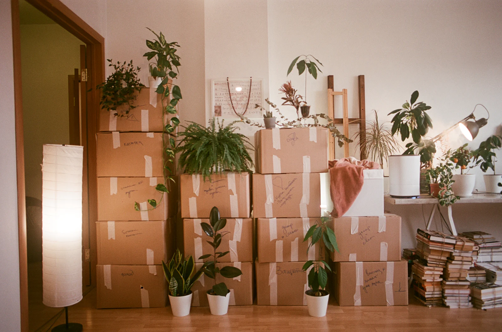
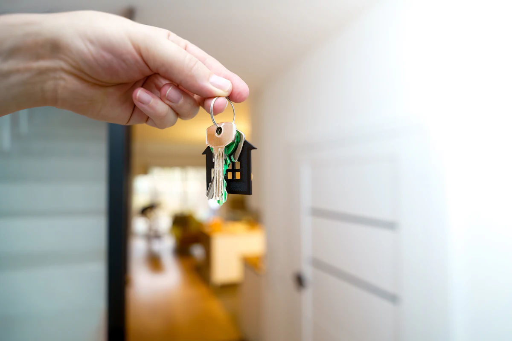
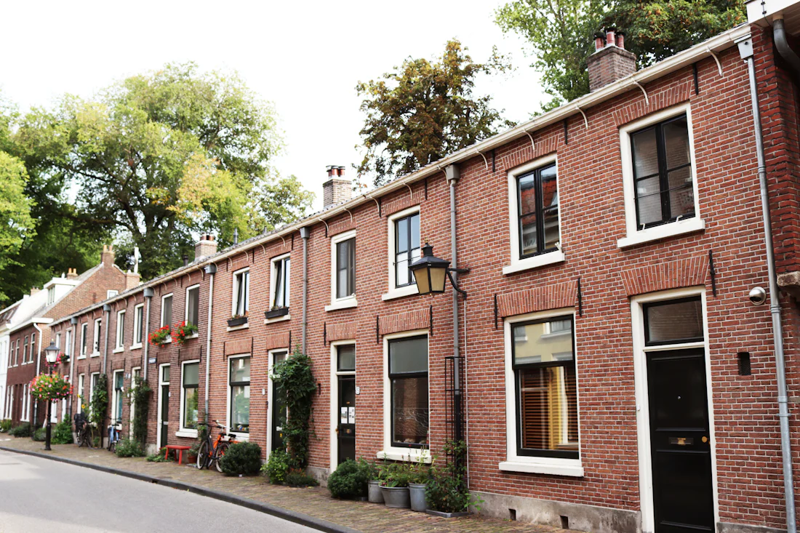

Onafhankelijk en gratis
Stap voor stap door je verhuizing
Zeg wat je gaat doen en je krijgt je eigen plan: wat nu aandacht vraagt en welke deadlines eraan komen.
Welkom terug. Je plan staat nog op dit apparaat.
Start de vragen Ik kijk eerst rond
Een paar korte vragen, elke vraag mag je overslaan. Zonder account en zonder cookies: wat je invult blijft op je eigen apparaat.
Zo werkt het
Je ziet steeds wat nu telt
- Beantwoord een paar korte vragenWat je gaat doen en hoe ver je bent. Overslaan mag altijd.
- Je krijgt je eigen planBovenaan staat wat nu aandacht vraagt, hooguit drie dingen tegelijk. De rest staat klaar voor later.
- Vink af en ga doorZet je deadlines in je agenda en bewaar je plan als bestand.
Voorbeeld
Je koopt een woning en je bod is net geaccepteerd
Nu aandacht
- Controleer de koopovereenkomst voordat je tekent
- Noteer wanneer je het getekende contract kreeg en wanneer je bedenktijd eindigt
- Besluit voor het einde van je bedenktijd of je afziet
en nog 4 open

Per onderdeel een takenlijst
Liever eerst rondkijken?
Kies een onderdeel en lees de taken. Dat kan ook zonder de vragen.
- Een woning kopenVan oriënteren en bieden tot de overdracht bij de notaris.
- Mijn woning verkopenVoorbereiden, verkopen en de overdracht.
- Een woning hurenZoeken, het contract controleren en de oplevering.
- Mijn huur opzeggenOpzeggen, voorinspectie en opleveren.
- De verhuizing zelfPlannen, regelen, de verhuisdag en erna.
Alles op een rij
Wat je hier vindt
- Taken
Checklists per onderdeel, met uitleg, wat je meeneemt en de bron. - Achtergrond
Artikelen en verwijskaarten over hoe iets werkt en waar je actuele bedragen vindt. - Partijen
Wat je van makelaars, adviseurs, notarissen en verhuurders mag verwachten. - Documenten
Welke documenten je nodig hebt en hoe je eraan komt. - AI-gids
Wat een AI-chatbot kan en niet kan, wat je er niet in plakt en voorbeeldprompts met een controle. - Gereedschap
Meubelplanner, Zakenlijst, Mijn dossier, Kostenoverzicht. - Zoeken
Zoek in taken, artikelen en partijen. Je zoekopdracht blijft op je apparaat.

Zo werkt deze site
Je kunt alles nalezen
Onder elke pagina staan de bronnen en de datum van de laatste controle. Zo lees je zelf na wat er staat.
Je antwoorden en je lijsten blijven op je eigen apparaat. Er is geen account en er zijn geen cookies.